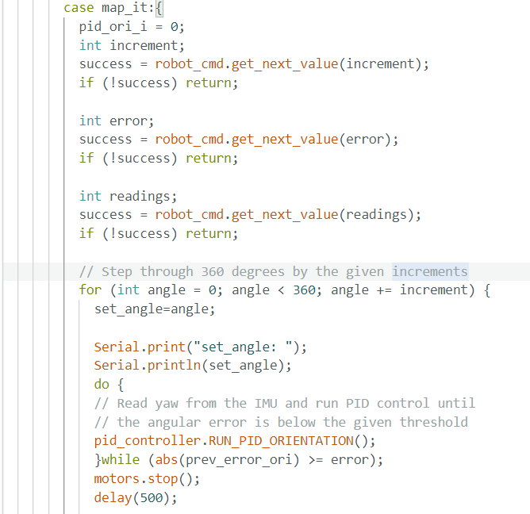
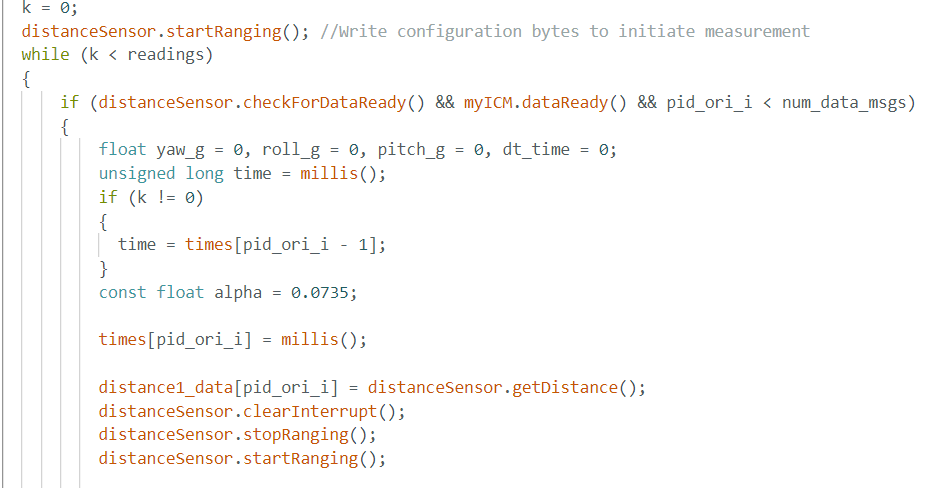
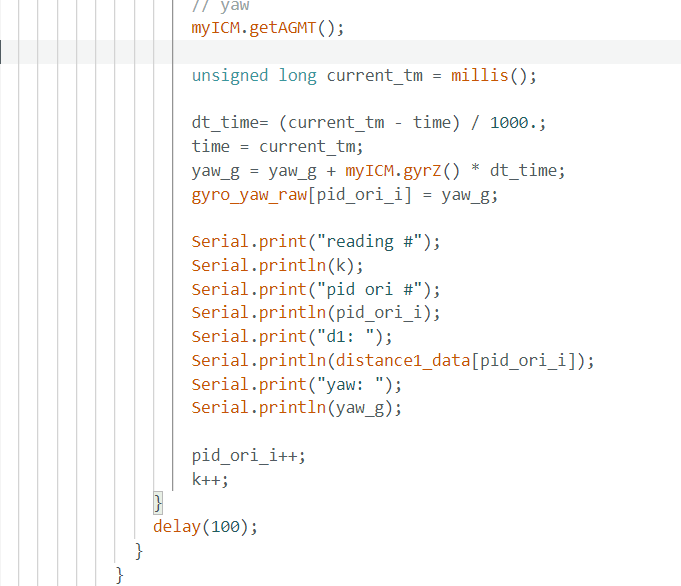
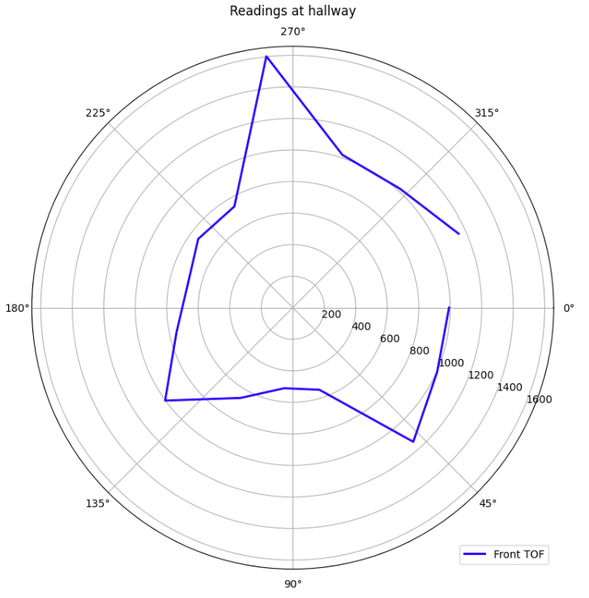
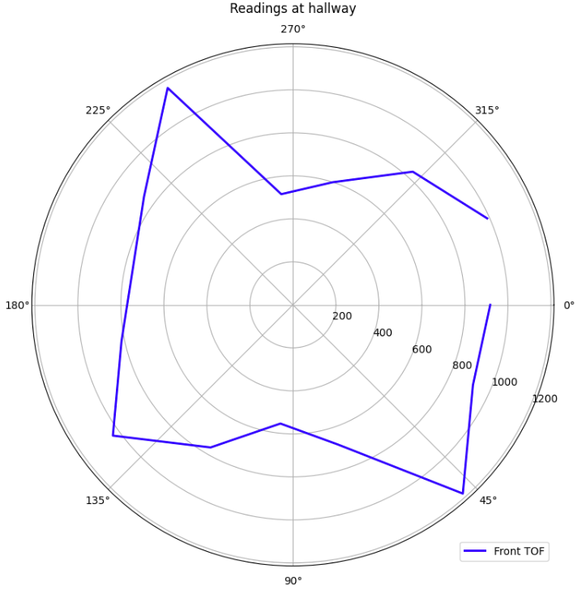
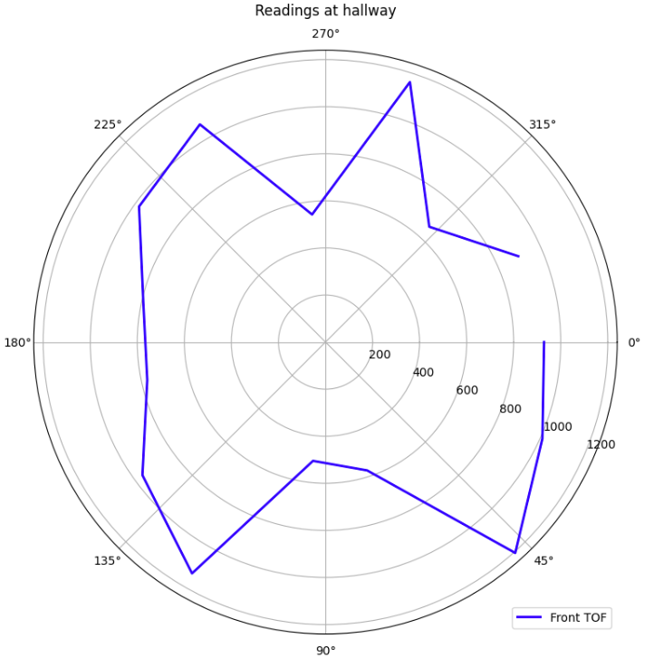
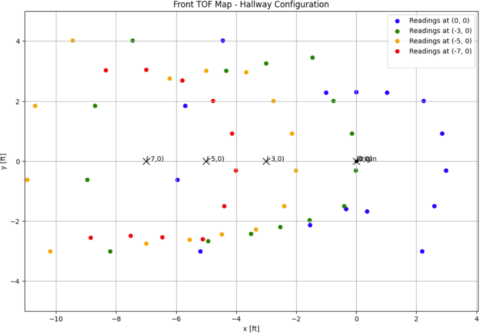

Lab 9: Mapping
For this lab, I used PID orientation control to scan and map out a space. I placed my robot in different spots and had it slowly spin in place while taking distance readings using the ToF sensor. Since I couldn’t use the lab room, I used a hallway instead.
Orientation Control
For mapping, I went with orientation control. Initially, my robot wasn’t performing well at angles other than zero. After talking to Aidan Derocher, he pointed out that my Kp was too high, which was causing the system to overshoot. I lowered Kp to 0.9 and added a Ki value of 0.01. That made the robot way more stable and able to hold its position at different angles. Once it was tuned, I was able to get 24-degree increments and take 3 readings per spot. To run the mapping routine, I added a BLE command to the Artemis that would start the process.
code snippet:



This command makes the car turn to each angle using the PID controller until it’s close enough—within 4 degrees. Once it gets there, it takes 3 TOF readings while staying still. In Python, I set the step size to 24 degrees, which gave me 45 data points per spot.
While testing, I tuned the PID values to make the turns smoother and more consistent (Kp = 1.0 , Ki = 0.01, Kd = 0). You can see how it moves in the video below.
While I do see that my robot does go a little slower than it should be when rotating, but I found that keeping at this kp and ki kept the car from going unstable. I would like to tune it a little more, but I did not have much time as I would hope.
rReadings
Since I got mapping to work after office hours, I could not use the four desinated locations in the arena setup in the lab. Instead, I used the hallway and placed my robot in four distinct locations.
After taking the measurement from each location, I sent the data over to python which I would later be able to plot.
I was able to get a good amount of data from each location. I was able to get 3 readings per angle, and I took 15 angles per location. I then averaged the data and plotted it in polar coordinates.
Location where I took the measurements:

I marked approximately where I took the measurements in the image above.
I then plotted in the polar coordinate plot.
Location 1:

Location 2:

Location 3:

Location 4:

Merge and Plot readings
Transformation Mathematics
The transformation from polar to Cartesian coordinates involves two main steps:
1. Convert Polar to Local Cartesian Coordinates
Given a point in polar coordinates (r, θ), the local Cartesian coordinates are:
xlocal = r · cos(θ)
ylocal = r · sin(θ)
2. Transform Local to Global Map Coordinates
Apply a transformation matrix to convert local coordinates to global coordinates using the robot's position and orientation (xrobot, yrobot, α):
xglobal = cos(α) · xlocal - sin(α) · ylocal + xrobot
yglobal = sin(α) · xlocal + cos(α) · ylocal + yrobot
3. Scale Distance Units
To convert distances from millimeters to feet:
distance (feet) = distance (mm) / 304.8

Edges
Comparing to the hallway, I can see that the robot was able to estimate the edges of the hallway, but I would say that it detected the edges of the hallway was not the best given that there were people or stuff in the way of the robot. If, I had the oppurninty to test it in the lab, I would have been able to get a better estimate compared to what I got.
Conclusion